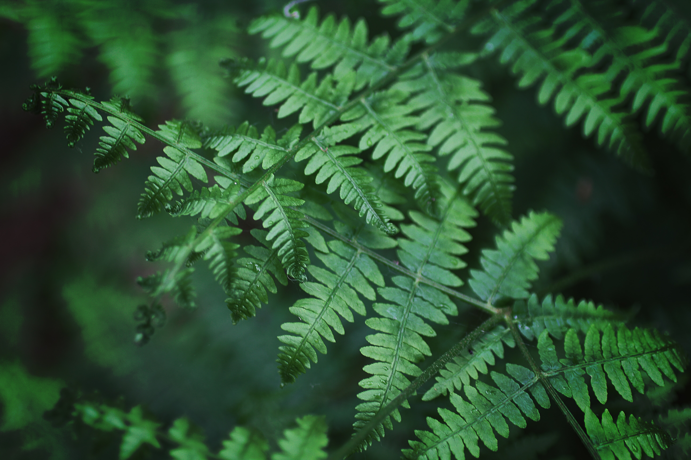
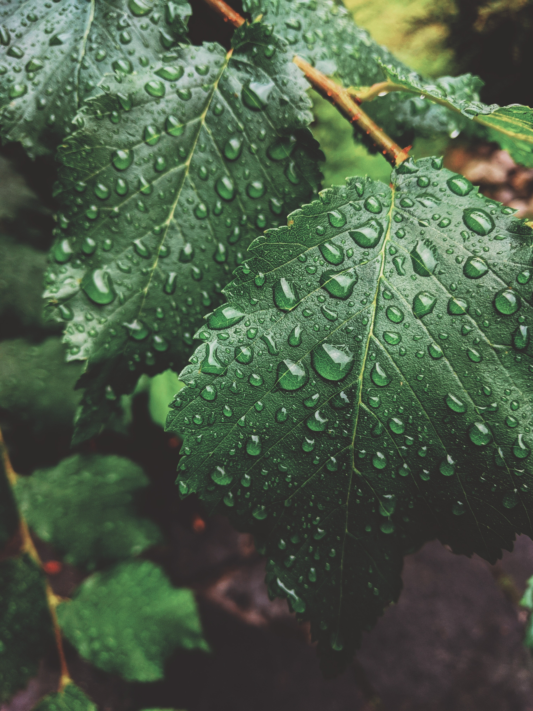
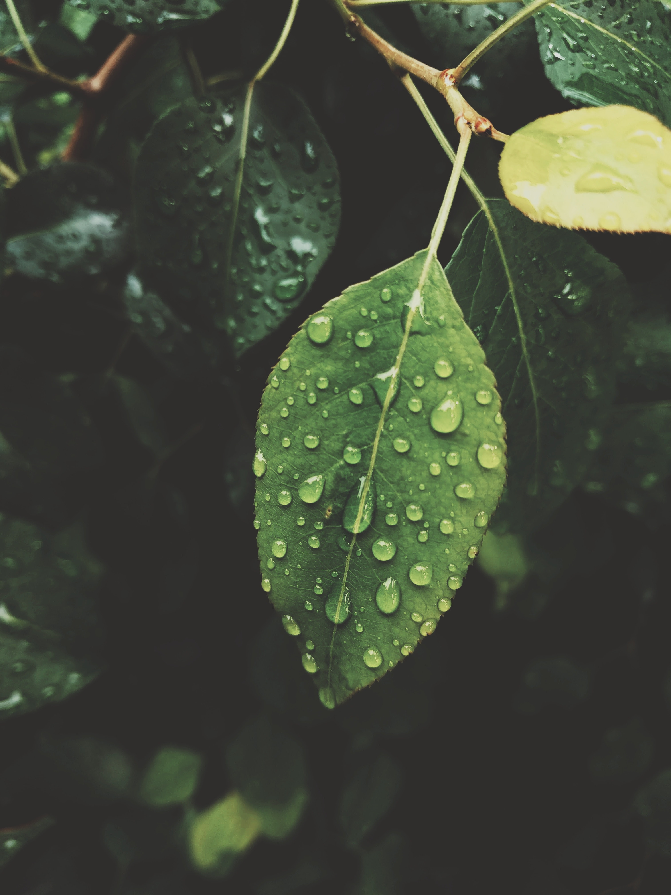

Nature, in the broadest sense, is the physical world or universe. "Nature" can refer to the phenomena of the physical world, and also to life in general.
Click the button below to sign up for more nature facts!
Leaves provide food and air that allow the plant to live and grow.
Acacia trees can warn each other of danger.
There are 12 times more trees on Earth than stars in the Milky Way!
Only around 200 plant types are eaten by humans.
There is something infinitely healing in the repeated refrains of nature — the assurance that dawn comes after night, and spring after the winter.
- Rachel Carson
Do you love nature?
Sign up for more interesting facts about our natural environment!